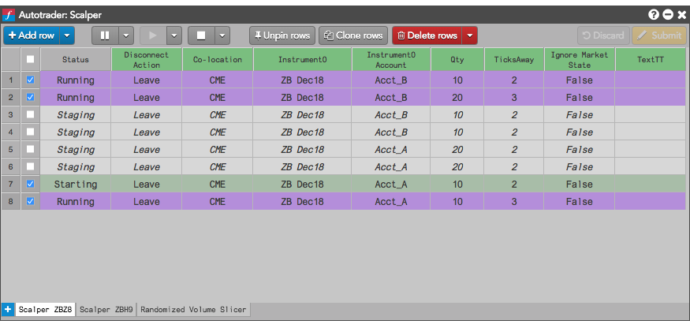

The Autotrader widget combines the functionality of the Algo Dashboard and Autotrader widgets to let you deploy, launch, and manage algos built using various tools such as ADL and TT Algo SDK from within a single widget. Using Autotrader, you can configure multiple instances of an algo, modify it's settings, and select a co-located data center nearest the exchange to execute your algo. You can open the widget by selecting Autotrader from the Widgets menu. You can use the Autotrader widget to quickly set up and launch one or more instances of an algo.
After launching an algo, you can pause, resume and cancel one or multiple instances of the algo.
